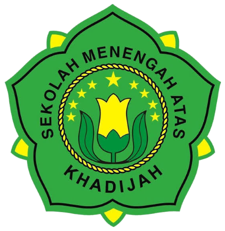

SMA Khadijah Surabaya adalah salah satu Sekolah Menengah Atas di bawah naungan Yayasan Taman Pendidikan dan Sosial Nahdlatul Ulama Khadijah Surabaya (Yayasan Khadijah Surabaya).
Sekolah yang mulai beroperasi tahun 1961 ini didirikan oleh KH. Abdul Wahab Turcham, KH. Ridwan Abdullah, KH. Abdul Fatah Yasin, dan KH. Abdul Aziz Diyar. Kala itu SMA Khadijah diperuntukkan khusus bagi pendidikan kaum putri.
Pada tahun 2007 tepatnya pada tanggal 15 Juni 2007, SMA Khadijah Surabaya resmi ditetapkan sebagai Rintisan Sekolah Bertaraf Internasional (R-SMA BI) sesuai dengan SK Direktur Pembinaan Sekolah Menengah Atas, Direktorat Jenderal Manajemen Pendidikan Dasar dan Menengah, Departemen Pendidikan Nasional, nomor 564.a/C4/MN/2007, Tahun Anggaran 2007.
Pada tahun 2008 SMA Khadijah Surabaya resmi menerima sertifikat ISO 9001:2008 dengan nomor 35793 sebagai wujud untuk meningkatkan kualitas manajemen dalam mengelola sekolah untuk mencapai tujuan yang tertuang dalam visi dan misi SMA Khadijah Surabaya. Saat ini sertifikasi ISO telah upgrade ISO 9001:2015
Di SMA Khadijah, kami menyediakan fasilitas modern dan lingkungan belajar yang kondusif untuk mendukung perkembangan akademik dan non-akademik siswa. Kami juga memiliki tenaga pengajar yang berpengalaman dan berdedikasi untuk membantu siswa mencapai potensi terbaik mereka.
Visi :
"Terwujudnya Institusi Pendidikan Bertaraf Internasional dengan Nuansa Islam ASWAJA yang membentuk SDM santun, unggul dan kompetitif"Misi :